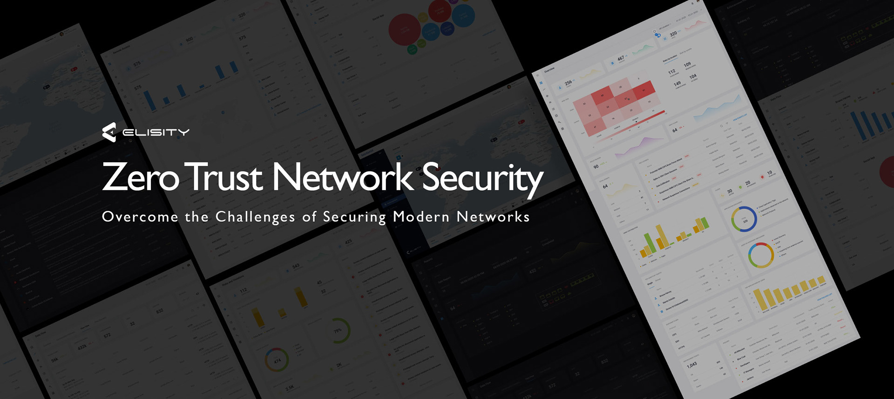
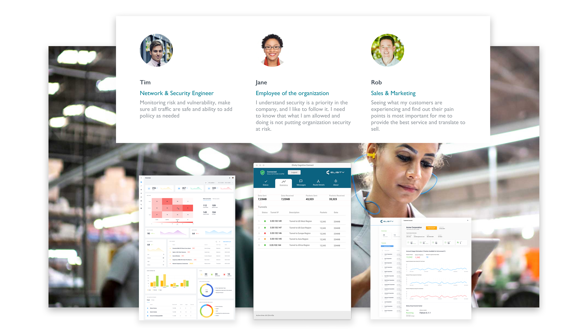
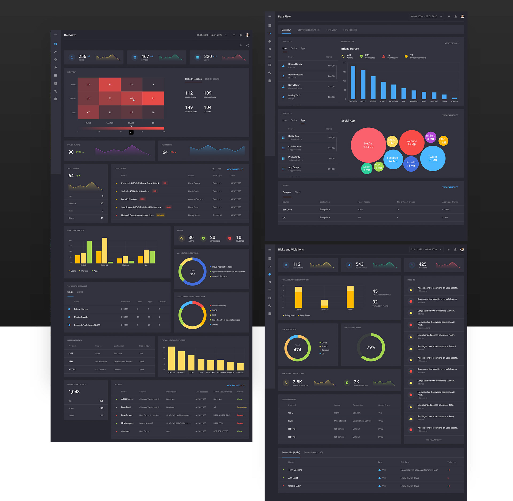
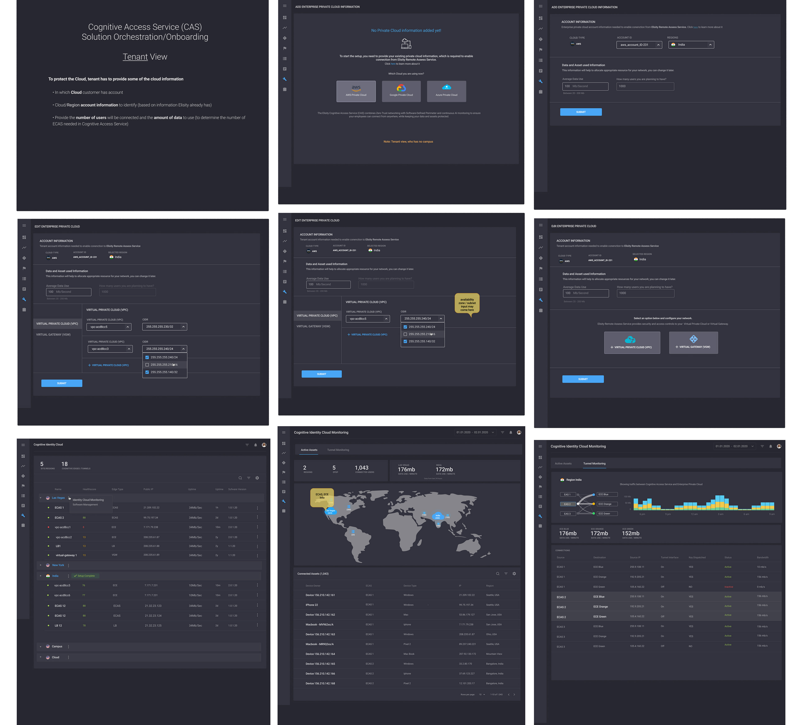
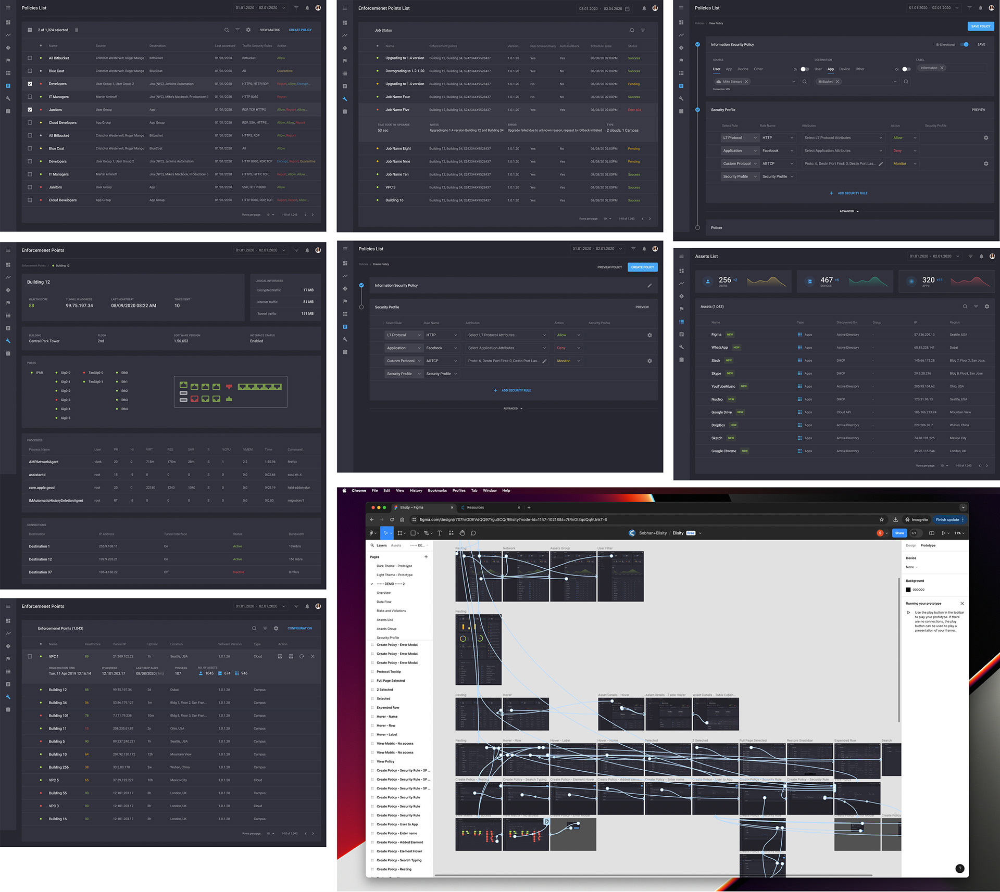
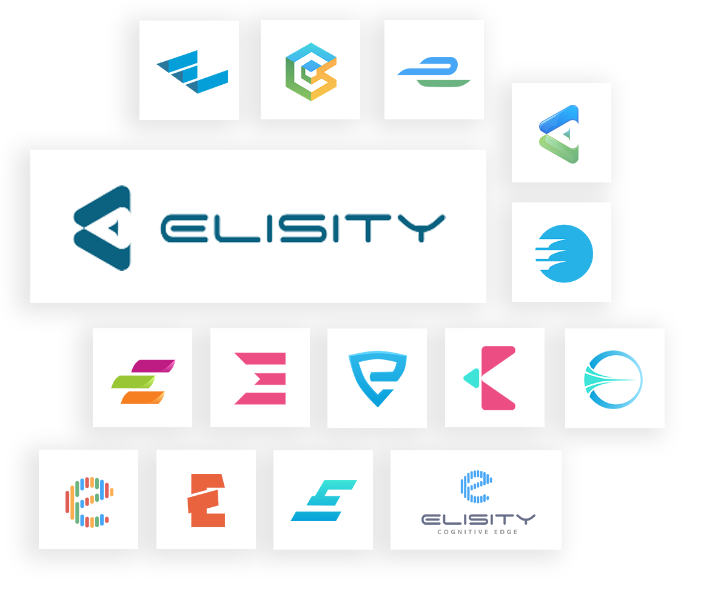
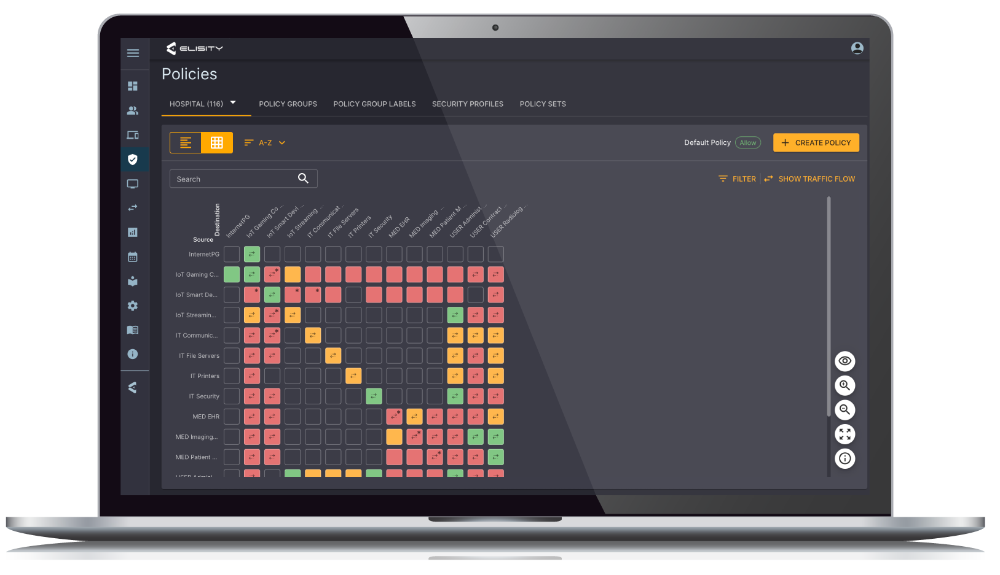

-
2025
Accelerating to AI-First UX
In 6G, AI won't just support the network — it will be built into its core design. This "AI-native" approach means AI is embedded directly into how the network controls, manages, and processes data.
Director of UX Design and UI Architecture @ Ataya
-
2022
Universal Connectivity Platform
Started as the first person on the US team and built the product from the ground up. As the owner of UX/UI, my goal was to hire the best people and continuously improve the experience.
Director of UX Design and UI Architecture @ Ataya
-
2020
Zero Trust Network Security
Over two years at Elisity, I made major design decisions, worked with key stakeholders, and delivered a high-quality enterprise product from the ground up.
Head of UX Design & UI Architect @ Elisity

Case Study
Zero Trust Network Security
Enterprise UX
Zero Trust
Design System
Network Security
Starting from scratch — I joined Elisity in early 2020 with a mandate to ship the first product within three months.
The company had a prototype and infrastructure but no complete product to show customers. I assembled and led a team, working closely with the CEO, VP of Product, and CTO to define the product vision, information architecture, and design language — all simultaneously.
By coordinating on-site and offshore teams through a focused sprint cycle, we shipped the first release in record time. Along the way, I also designed the company's logo.
Over the next two years, we grew from that scrappy first release into a mature enterprise product trusted by organisations including GSK and Bupa Health — securing multiple funding rounds along the way.
Timeline
Two years, zero to enterprise
Spring 2020
First 90 days — ship or bust
I joined Elisity as the company was gearing up for its initial product launch. Partnering directly with engineering and stakeholders, we designed and delivered the first release in under three months. There was no time for perfection — only clarity, speed, and trust between the team.
Summer 2020
Making security accessible to everyone
The initial launch was successful, but a bigger challenge emerged: how do you design a security product that doesn't require a network engineer to use it? The stereotype of security tools being complex, dark, and cryptic needed to be broken.
We started by talking to real users — mapping pain points, running task-based usability sessions on medium-fidelity prototypes, and conducting qualitative interviews with internal stakeholders and customers. The goal: design with the CEO in mind as the primary user, not just the CISO.

User personas developed from research sessions to guide design decisions
2021 – 2022
Scaling the product and the team
With user research informing every decision, we evolved the product across multiple releases — adding cloud-first infrastructure, a policy engine, and identity-based micro-segmentation. I grew the design team and introduced a design system to bring consistency and speed to the rapidly expanding product surface.
Core Feature
Visibility in Zero Trust Security
Elisity's IdentityGraph technology gives security teams unparalleled visibility into every device and user on the network. The design challenge was translating deeply technical data — IP addresses, MAC addresses, device classifications — into something instantly readable by a non-specialist.
We designed the network map and asset explorer to surface meaningful context at a glance: identity, risk level, policy status, and lateral movement paths — without drowning users in raw data.
"Security teams shouldn't need a PhD to understand their own network."

IdentityGraph analytics view — visibility across hybrid environments

Cloud Access Security view — policy status across devices and users
Policy Framework
Zero Trust principles, made usable
Elisity's policy framework integrates zero trust with network access control. Designing the policy builder was one of the most complex UX challenges — it needed to support both simple rules for less-technical users and granular control for security architects.

Policy enforcement interface — identity-based rules across IT, OT, and IoT
Comprehensive Visibility
Discover, classify, and monitor every asset across hybrid environments — cloud, on-premise, OT, and IoT.
Granular Control
Enforce identity-based policies for users and devices with a policy builder designed for clarity, not complexity.
Lateral Movement Defence
Contain threats and limit blast radius through micro-segmentation — visualised in real time on the network map.
Dynamic Policies
Policies adapt in real-time to context changes — user behaviour, device health, location — without manual intervention.
Zero Trust Enablement
Least-privilege access enforced based on verified identity and context at every network entry point.
Infrastructure
Cloud-first, no agents, no hardware
Elisity's cloud-delivered micro-segmentation removes the traditional barriers of hardware deployment. CISOs and their teams get a single management console — the Elisity Cloud Control Center — for visibility, policy configuration, and analytics across the entire environment.
Designing this console meant balancing power and simplicity. The interface needed to serve both the CISO reviewing reports and the security engineer drilling into device-level policy enforcement — often on the same screen.
AI and machine learning adapt to network changes continuously, so the UI needed to surface model-driven recommendations without making them feel like black-box decisions.

Cognitive Connect — AI-powered asset discovery and policy enforcement at the network edge
Foundation
Building the design system
Until mid-2020, development was conducted ad hoc — every team made independent design decisions, resulting in visual inconsistencies and unpredictable component behaviour. To fix this and significantly increase team velocity, I created a unified design system and shared component library.
We consolidated three typefaces down to a single font family — Roboto — with defined weights and widths for each context. I built a comprehensive web style guide covering buttons, forms, data tables, navigation modules, and states, ensuring every element behaved predictably across the entire product.

Component library — standardised across product and marketing surfaces

Brand identity — including the Elisity logo I designed from scratch
Reflection
Looking back
3
months to first release
2+
funding rounds secured
∞
lessons learned
Witnessing a company grow from a raw prototype to a funded enterprise product — trusted by organisations like GSK and Bupa Health — is one of the most formative experiences of my career.
Building a mature product at startup speed requires more than design skill. It demands clarity of vision, relentless prioritisation, and a team that trusts each other enough to move fast without breaking what matters.
The biggest lesson: the best security product is the one people actually use. Making zero trust accessible — visually, conceptually, and operationally — was the real design problem worth solving.
